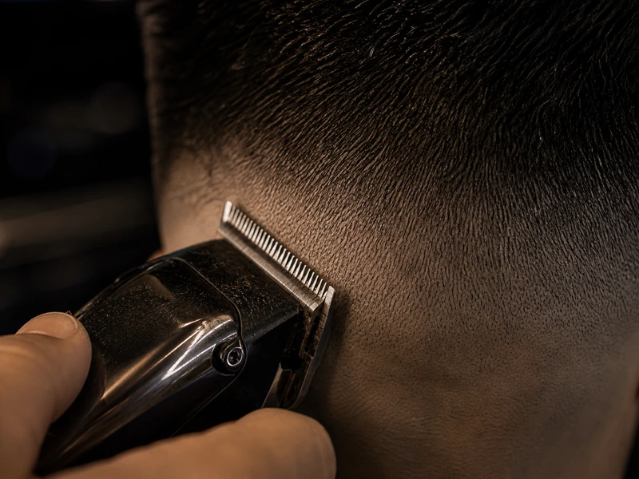
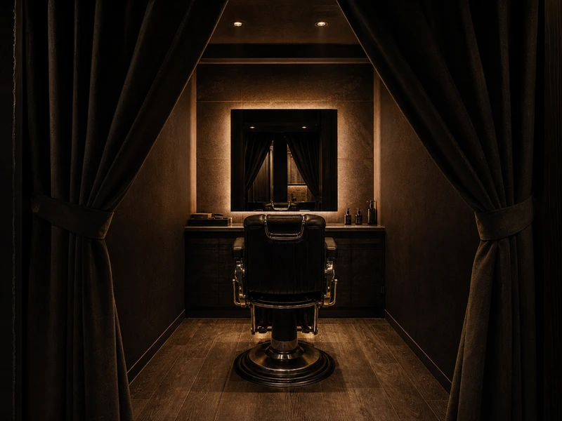
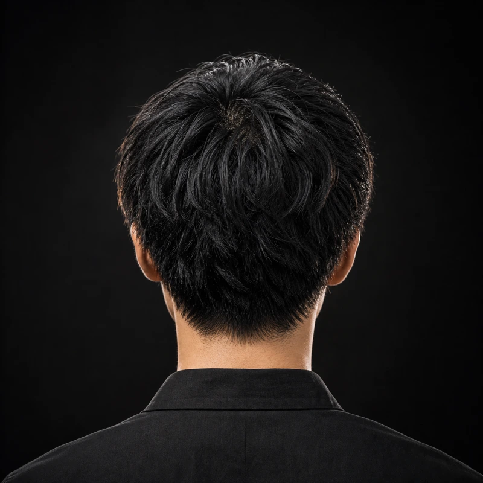
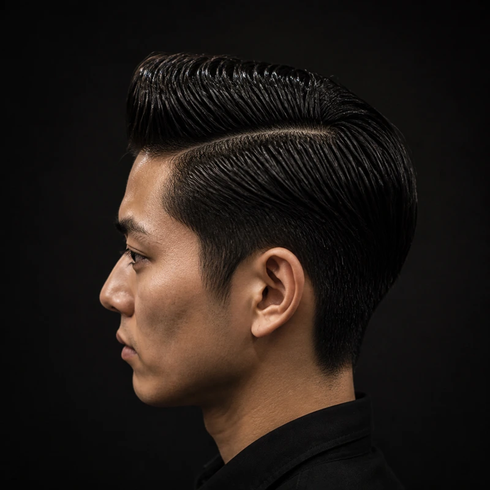
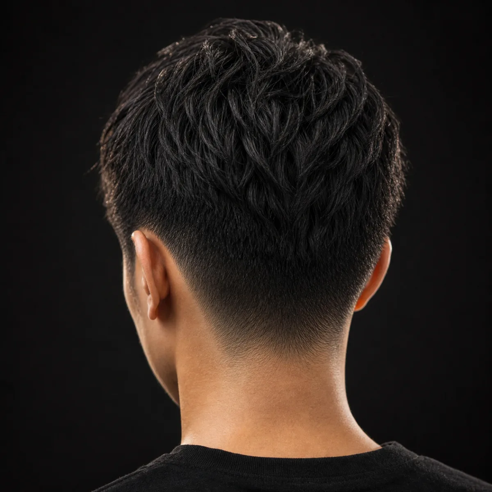
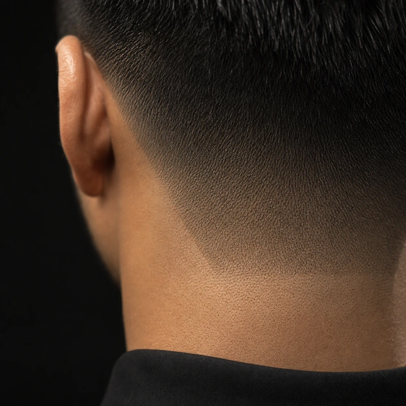
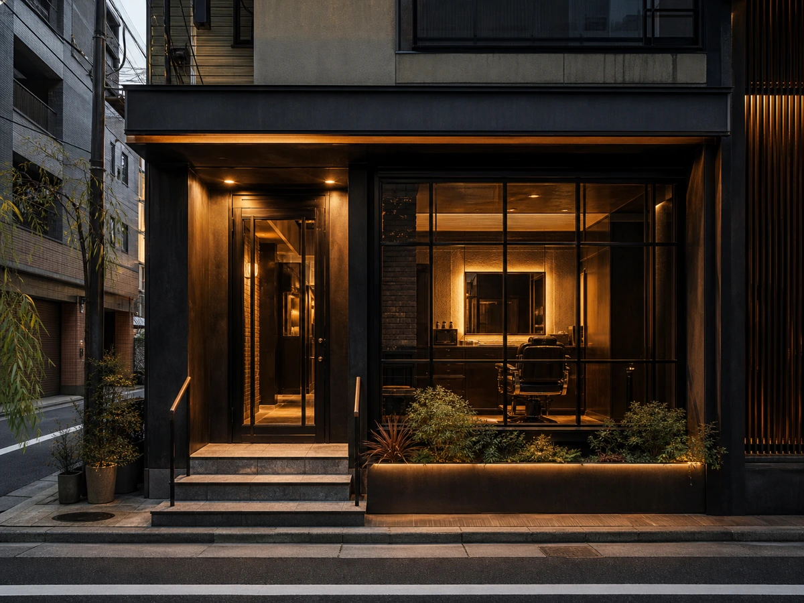

01
フェードの輪郭を0.1mm単位で詰める
グラデーションは曖昧にしない。志村海斗の20年の経験を軸に、サイドもバックも角度まで計算してつなぐ。短髪ほど差が出るから、精度で勝負する。
男の格を上げる
削ぎ落として、
残すべき強さだけを残す。
FORGE は飾りすぎない。骨格、髪質、ひげの生え方、ライフスタイルを見て、あなたに必要なラインだけを残す。鏡の前で気分が上がるだけでは足りない。仕事帰りの一瞬も、休日の横顔も、常に整って見える状態まで仕上げる。
技術で差をつける

グラデーションは曖昧にしない。志村海斗の20年の経験を軸に、サイドもバックも角度まで計算してつなぐ。短髪ほど差が出るから、精度で勝負する。
ただ剃るだけでは終わらない。肌当たり、温度、ストロークを丁寧に積み重ねて、輪郭を鮮明に見せる。ひげ周りの印象が変われば、顔全体が締まる。

スポットライトが落ちる静かな店内で、余計なノイズを切る。1席ごとの距離を確保し、施術と会話に集中できる時間をつくる。整える時間まで、あなたの武器に変える。
横顔まで抜かりなく




技術で応える3人
20年の経験で培った技術と、一人ひとりの骨格に合わせたカットを提供する。短髪ほど誤魔化しは利かないから、細部まで切り込む。
クラシックからモダンまで、あなたのライフスタイルに合うスタイルを仕上げる。再現しやすい質感まで計算して、朝のセット時間を削る。
丁寧なシェービングと、長く続く清潔感のあるカットが信条だ。店を出た直後ではなく、次に切る日まで印象が崩れにくい仕上がりを追う。
空間も道具も妥協しない
心斎橋で、夜まで通える

今の気分で、すぐ選べる
ネット予約、LINE、電話の3ルートを用意。思い立った瞬間に動ける導線だけを残した。初回価格があるメニューも、そのまま確認して進める。
フェード、シェービング、白髪ぼかし。必要な手入れを一気に整えて、あなたの輪郭を更新する。迷う前に、枠を押さえる。